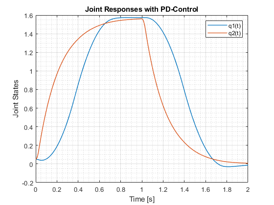
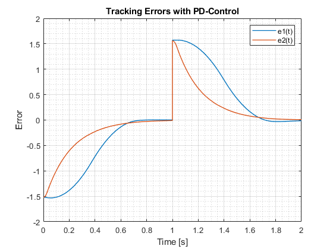
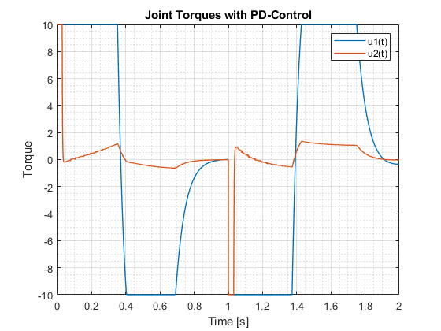
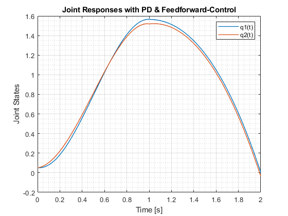
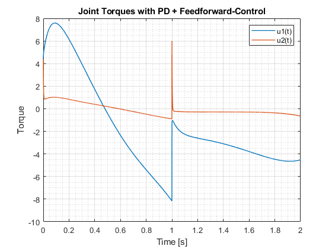
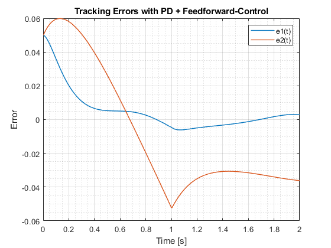
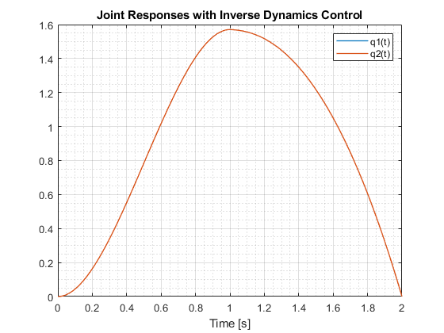
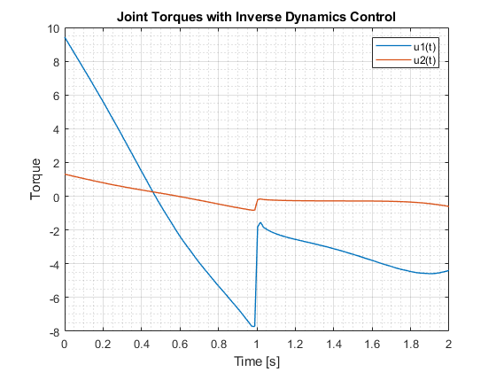
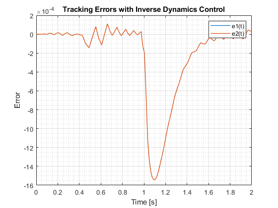

Contents
Problem1 (a)
% Initial conditions x0 = [0.05; 0; 0.05; 0]; % Simulate the system using ode45 with PD control [T, X] = ode45(@(t, x) EoM(t, x, @PD), [0, 2], x0); % Plot joint responses figure(1) plot(T, X(:, 1), T, X(:, 3), LineWidth = 1) legend('q1(t)', 'q2(t)') title('Joint Responses with PD-Control') ylabel('Joint States') xlabel('Time [s]') grid on grid minor % Calculate torques and tracking errors tau = zeros(2, length(T)); e = zeros(2, length(T)); for i = 1:length(T) [tau(:, i), e(:, i)] = PD(T(i), X(i, :)); end % Plot tracking errors figure(2) plot(T, e(1, :), T, e(2, :), LineWidth = 1) legend('e1(t)', 'e2(t)') title('Tracking Errors with PD-Control') xlabel('Time [s]') ylabel('Error') grid on grid minor % Plot joint torques figure(3) plot(T, tau(1, :), T, tau(2, :), LineWidth = 1) legend('u1(t)', 'u2(t)') title('Joint Torques with PD-Control') xlabel('Time [s]') ylabel('Torque') grid on grid minor  
Problem1 (b)
% error1(t=1) = 0.0051; Actual e(1) is around 1.5 on the plot % error2(t=1) = -0.0101; % error1(t=2) = -0.0134; % error2(t=2) = 0.0080. % Torque1 saturates in the intervals [0, 0.360), (0.41, 0.71], [1, 1.37], and [1.42, 1.75] % Torque2 almost does not saturate. It does for around 0.03s at the beginning and near 1s % Large tracking errors might be due to the initialization of the system, where the joint angles and velocities are not desired ones. % Large initial torques might be due to the high control gain trying to eliminate the tracking error rapidly.
Problem2 (a)
% Generate cubic polynomial reference trajectories t = 0:0.01:2; qd = zeros(2, length(t)); vd = zeros(2, length(t)); ad = zeros(2, length(t)); for i = 1:length(t) [qd(:, i), vd(:, i), ad(:, i)] = cubicpoly(t(i)); end % Initial conditions x0 = [0.05; 0; 0.05; 0]; % Simulate the system using ode45 with PD + Feedforward control [T, X] = ode45(@(t, x) EoM(t, x, @PD_FeedForward), [0, 2], x0); % Plot joint responses figure(1) plot(T, X(:, 1), T, X(:, 3), LineWidth=1) legend('q1(t)', 'q2(t)') title('Joint Responses with PD & Feedforward-Control') ylabel('Joint States') xlabel('Time [s]') grid on grid minor % Calculate torques and tracking errors tau = zeros(2, length(T)); e = zeros(2, length(T)); for i = 1:length(T) [tau(:, i), e(:, i)] = PD_FeedForward(T(i), X(i, :)); end % Plot joint torques figure(2) plot(T, tau(1, :), T, tau(2, :), LineWidth=1) legend('u1(t)', 'u2(t)') title('Joint Torques with PD + Feedforward-Control') xlabel('Time [s]') ylabel('Torque') grid on grid minor % Plot tracking errors figure(3) plot(T, e(1, :), T, e(2, :), LineWidth=1) legend('e1(t)', 'e2(t)') title('Tracking Errors with PD + Feedforward-Control') xlabel('Time [s]') ylabel('Error') grid on grid minor  
Problem2 (b)
error1(t=1) = -0.0048; error2(t=1) = -0.0523; error1(t=2) = 0.0029; error2(t=2) = -0.0361.
% The errors and input torques are much smaller than those of pure PD % control. Joint responses and part of the torque inputs get smoother with % the feedforward added on.
Problem3 Drawing
clear; clc; close all % Initial conditions x0 = [0.0; 0; 0.0; 0]; % Simulate the system using ode45 with Inverse Dynamics control [T, X] = ode45(@(t, x) EoM(t, x, @InvDynamics), [0, 2], x0); % Plot joint responses figure(1) plot(T, X(:, 1), T, X(:, 3), LineWidth=1) legend('q1(t)', 'q2(t)') title('Joint Responses with Inverse Dynamics Control') xlabel('Time [s]') grid on grid minor % Calculate torques and tracking errors tau = zeros(2, length(T)); e = zeros(2, length(T)); for i = 1:length(T) [tau(:, i), e(:, i)] = InvDynamics(T(i), X(i, :)); end % Plot joint torques figure(2) plot(T, tau(1, :), T, tau(2, :), LineWidth=1) legend('u1(t)', 'u2(t)') title('Joint Torques with Inverse Dynamics Control') xlabel('Time [s]') ylabel('Torque') grid on grid minor % Plot tracking errors figure(3) plot(T, e(1, :), T, e(2, :), LineWidth=1) legend('e1(t)', 'e2(t)') title('Tracking Errors with Inverse Dynamics Control') xlabel('Time [s]') ylabel('Error') grid on grid minor
Problem3 (b)
% error1(t=1) = -0.0048; % error2(t=1) = -0.0523; % error1(t=2) = 0.0029; % error2(t=2) = -0.0361. % Appreantly the figures are not what they supposed to be. But % theoretically, with Inverse Dynamics Control, the errors and the torques should be similar % to thoses in PD + FeedForward ones.
Problem 4
% PD controller achieves good tracking with some initial errors presented. % PD + FeedForward Controller improves by reducing initial errors with % added feedforward terms, but may still exhibit slight overshoot. Inverse % Dynamics Control, somehow accurate, but requires very precious dynamics % parameters.
Problem1 PD Control
function dx_dt = EoM(t, x, controller) % Given Dynamic Parameters m1 = 7.848; m2 = 4.49; l1 = 0.3; lc1 = 0.1554; lc2 = 0.0341; I1 = 0.176; I2 = 0.0411; % Retrive qi from State State Representation [X] q1 = x(1); q1dot = x(2); q2 = x(3); q2dot = x(4); % Inertia matrix D(q) D = zeros(2, 2); D(1, 1) = m1 * lc1^2 + m2 * (l1^2 + lc2^2 + 2 * l1 * lc2 * cos(q2)) + I1 + I2; D(1, 2) = m2 * (lc2^2 + l1 * lc2 * cos(q2)) + I2; D(2, 1) = D(1, 2); D(2, 2) = m2 * lc2^2 + I2; % Compute Christoffel symbols C121 = -m2 * l1 * lc2 * sin(q2); C211 = C121; C221 = C121; C112 = -C121; % Compute control inputs (torques) using the provided controller function [tau, ~] = controller(t, x); % Compute accelerations a1 = tau(1) - C121 * q1dot * q2dot - C211 * q2dot * q1dot - C221 * q2dot^2; a2 = tau(2) - C112 * q1dot^2; % Compute state derivatives dx_dt = [x(2); 1 / (D(1, 1) * D(2, 2) - D(2, 1) * D(1, 2)) * (D(2, 2) * a1 - D(1, 2) * a2); x(4); 1 / (D(1, 1) * D(2, 2) - D(2, 1) * D(1, 2)) * (-D(2, 1) * a1 + D(1, 1) * a2)]; end % Function generates cubic polynomial reference trajectories % [qd (positions), vd (velocities), ad (accelerations)] function [qd, vd, ad] = cubicpoly(t) if t <= 1 && t >= 0 a = [1 0 0 0; 0 1 0 0; 1 1 1 1; 0 1 2 3] \ [0; 0; pi/2; 0]; elseif t > 1 a = [1 1 1 1; 0 1 2 3; 1 2 4 8; 0 1 4 1] \ [pi/2; 0; 0; 0]; end qd = [a' * [1; t; t.^2; t.^3]; a' * [1; t; t.^2; t.^3]]; vd = [a' * [0; 1; 2*t; 3*t.^2]; a' * [0; 1; 2*t; 3*t.^2]]; ad = [a' * [0; 0; 2; 6*t]; a' * [0; 0; 2; 6*t]]; end function [tau, e] = PD(t, x) % Extract states q1 = x(1); q1dot = x(2); q2 = x(3); q2dot = x(4); % Define gains kp1 = 100; kp2 = 100; kd1 = 20; kd2 = 20; % Calculate desired positions based on time if t <= 1 && t >= 0 q1d = pi/2; q2d = pi/2; elseif t > 1 q1d = 0; q2d = 0; end % Compute control inputs (torques) tau1 = min(max(-10, kp1 * (q1d - q1) - kd1 * q1dot), 10); tau2 = min(max(-10, kp2 * (q2d - q2) - kd2 * q2dot), 10); tau = [tau1; tau2]; % Calculate tracking errors e = [q1 - q1d; q2 - q2d]; end
Problem2 PD + Feedforward Control
function [tau, e] = PD_FeedForward(t, x) % Extract states q1 = x(1); q1dot = x(2); q2 = x(3); q2dot = x(4); % Define gains kp1 = 100; kp2 = 100; kd1 = 20; kd2 = 20; % Compute desired positions, velocities, and accelerations using cubic polynomial function [qd, vd, ad] = cubicpoly(t); % Compute control inputs (torques) with feedforward tau1 = min(max(-10, ad(1) + kp1 * (qd(1) - q1) + kd1 * (vd(1) - q1dot)), 10); tau2 = min(max(-10, ad(2) + kp2 * (qd(2) - q2) + kd2 * (vd(2) - q2dot)), 10); tau = [tau1; tau2]; % Calculate tracking errors e = [q1 - qd(1); q2 - qd(2)]; end
Problem3 Inverse Dynamics Control
function [tau, e] = InvDynamics(t, x) % Extract states q1 = x(1); q1dot = x(2); q2 = x(3); q2dot = x(4); % Define gains kp1 = 100; kp2 = 100; kd1 = 20; kd2 = 20; % Define parameters m1 = 7.848; m2 = 4.49; l1 = 0.3; lc1 = 0.1554; lc2 = 0.0341; I1 = 0.176; I2 = 0.0411; % Compute inertia matrix D D = zeros(2, 2); D(1, 1) = m1 * lc1^2 + m2 * (l1^2 + lc2^2 + 2 * l1 * lc2 * cos(q2)) + I1 + I2; D(1, 2) = m2 * (lc2^2 + l1 * lc2 * cos(q2)) + I2; D(2, 1) = D(1, 2); D(2, 2) = m2 * lc2^2 + I2; % Compute Christoffel symbols C121 = -m2 * l1 * lc2 * sin(q2); C211 = C121; C221 = C121; C112 = -C121; % Compute desired positions, velocities, and accelerations using cubic polynomial function [qd, vd, ad] = cubicpoly(t); % Compute desired accelerations with PD control aq = ad + [kp1; kp2] * (qd(1) - q1) + [kd1; kd2] * (vd(1) - q1dot); % Compute torques (control inputs) using inverse dynamics tau = D * aq + [C121 * q1dot * q2dot + C211 * q2dot * q1dot + C221 * q2dot^2; C112 * q1dot^2]; % Ensure torque limits are respected tau = [min(max(-10, tau(1)), 10); min(max(-10, tau(2)), 10)]; % Calculate tracking errors e = [q1 - qd(1); q2 - qd(2)]; end  